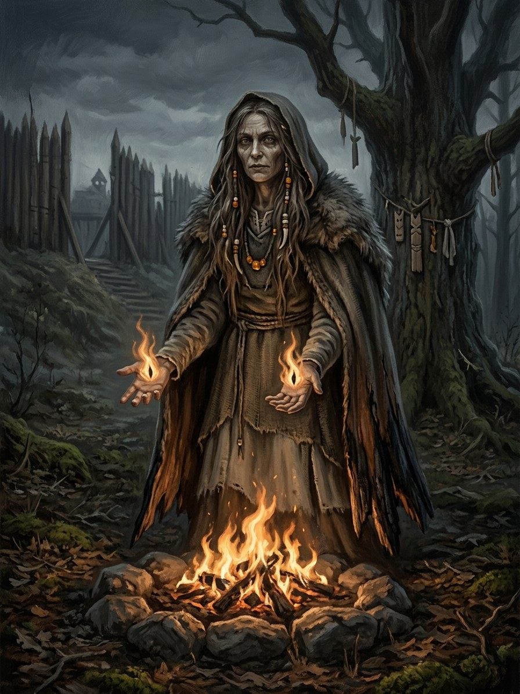

Gabija¶
Tautosakos šaltiniai [Istoriniai duomenys]¶
Gabija is the hearth fire and its guardian spirit. The name is tied (uncertainly) to gaubti, „to cover“, for banking the coals. In the old lists she appears only in Jan Łasicki’s De diis Samagitarum (c. 1582, 1615), as the household-fire spirit („Gabie“). Narbutt (19th century) split her into hearth and bread aspects; treat with caution. Hearth custom is later ethnography: bread and salt given to the fire; coals covered with ash at night so the fire does not „wander“; a bowl of water left so she can wash; no spitting, stamping on or urinating on the fire, or the house will burn.
Not Gabija: the great sacred fires. The record is: Dusburg’s Romowe flame (1326), Jerome of Prague’s household snakes and a „perpetual fire“ (via Piccolomini), Stryjkowski’s fire in the Vilnius valley, and Długosz’s account of Jogaila extinguishing it in 1387. None names Gabija. Modern writers often identify Gabija with the sacred-fire goddess Praurimė, and scholars disagree about which the vaidilutės served.
Gabija

Gabija · god¶
Tipas |
dievybė |
Pastaba |
Goddess of the sacred domestic hearth flame; protector of homes and vows. |
Sagoje¶
Domain: the hearth and sacred fire. Element: Fire („Ugnis tau degs“), zenith Rasos (summer-solstice noon). Force-face: none; she does not hunger, she guards. Every household fire is a small shrine. Her sparks, cut off when a sacred flame is killed, are the užgesilės.
The saga identifies her with the Šventaragis flame: „Gabijos liepsna“ is put out by the king’s buckets and the Krivis does not resist (Book I ch. 29, the baptism). In Book III ch. 17 a lantern flame the size of a palm silences the rain, „Gabija’s work“. In Book VI ch. 11 the old priestess says the vow-fire „is not a fool, only exact“: Birutė swore „I will not give myself“ and Kęstutis found a loophole; the gods one cheats by the letter still take by the spirit. Weakness: she punishes insult and desecration, and she cannot defend a flame no one tends.
Aukos ir draudimai¶
Bread and salt, a bowl of water by the hearth, ashes over the coals at night; fire-leaping at Rasos. Taboo: spitting into the fire or stepping over it.
Tarimas¶
gah-BIH-yah (IPA [ɡɐˈbʲɪjɐ]), stress ga-BI-ja.
Ryšiai
Counters: Baubas and maumas (told terrors) — Light and the hearth ward the told terrors.
Element: Ugnis (Fire)
Shards: Užgesėlės (the Quenched) — Sparks of killed sacred flames, cut off from Gabija.
Domain The hearth and the sacred fire
Layer God (Layer I) · she does not hunger, she guards
Element Fire, Ugnis tau degs · zenith Rasos, summer-solstice noon
Force-face None
Offerings Bread and salt; a bowl of water by the hearth; ashes over the coals at night; fire-leaping at Rasos
Taboos Spitting into the fire, stamping on it or stepping over it
Signs A hearth that will not go out; the Šventaragis flame; a palm-sized lantern flame that silences the rain (Book III ch. 17)
Soul Armour. Strength and warmth against the dark half of the year. At its simplest it keeps a dying flame alive.
Live ash. From a sacred flame it is the strongest ward in the land.
The vaidilutės. Fire is their craft, and the vow-fire is not a fool, only exact (Book VI ch. 11).
The untended flame. She cannot defend a flame no one tends.
Insult. She punishes desecration.
The bill. Exhaustion for a minor working; for a major one, soul-chill, and the caster can kill without feeling.
Killed flames. Their sparks, cut off from her, become the užgesėlės.
Sąsajos¶
graph LR
baubas["Baubas and maumas (told terrors)"]
el_fire["Ugnis (Fire)"]
gabija["Gabija"]
uzgesiles["Užgesėlės (the Quenched)"]
gabija -->|Element| el_fire
gabija -->|Counters| baubas
uzgesiles -->|Shard of| gabija
style gabija stroke-width:3px